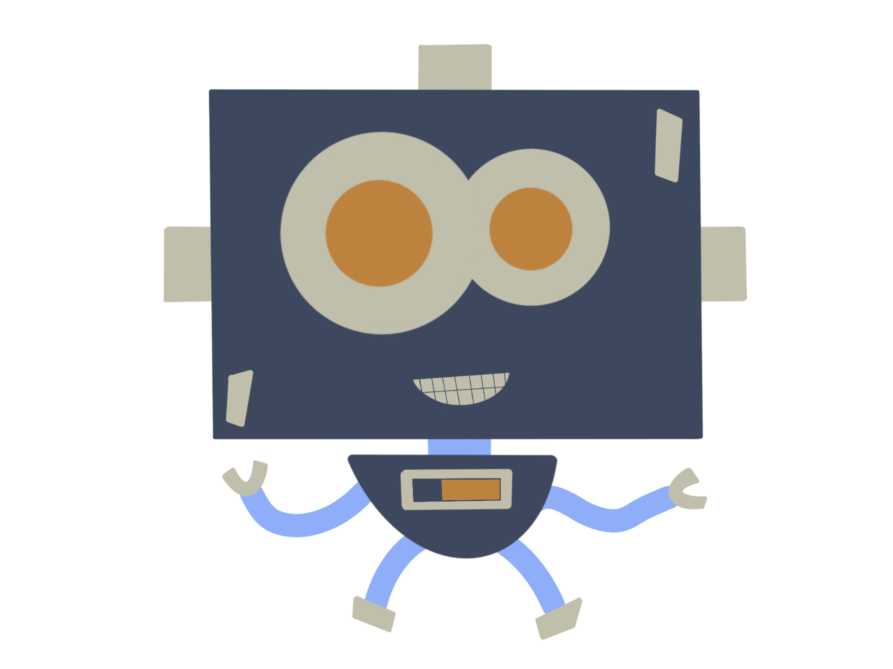
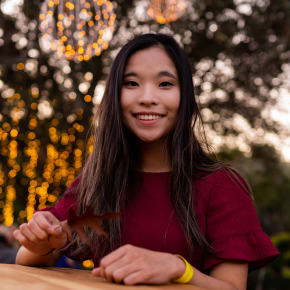

Statera
Balance your time with the help of a bot.

See our process
Our goal is to help college students manage their time and balance their academic work and social life better.
We aim to create a bot that helps students organize their tasks and manage time better. Based on students’ schedules and the balance between their academic commitments and social activities, the bot will give students suggestions for what to prioritize and alert students of urgent tasks. The bot can also pair students with other students who are working on the same task, and allow students to invite friends to work on tasks together, providing a way for students to build connections with others easier.
Understanding the Problem Space
Time management is a challenge to college students. While there are a lot of things students want to explore in college and they want to make the most of their time, they feel that it is challenging to balance schoolwork and social life.
The original pitch
Watch our pitch describing our initial problem space. We initially planned to focus on first year's transition to college, before realizing many of their issues were shared amongst college students universally.
Needfinding through user interviews
From POV statements to need insights, we sought to understand needs within our problem space by going out and talking to potential users.
We met five different first years at Dartmouth and learned about the issues they face in their transition to college.

In our conversations, we discovered that their #1 issue was time management.
See our full report here.
Ideation to Usability testing
Sketching + Ideating
We generated ideas to solve problems presented in our needfinding interviews, pushing ourselves to think big and outside of the box.
Low fidelity prototyping
Based on our previous sketches, we created a Lo-Fi prototype with the help of Procreate and POP by Marvel.
Interact with our Lo-Fi prototype:
Usability testing
We went out and showed potential users our low fidelity prototype in hopes of testing its fundamental usability.
We gained a lot of valuable insights through testing our Lo-Fi prototype with potential users.
See our full report here.
prototyping & evaluation
We refined our product through prototyping and heuristic evaluation, to ensure our interface was designed with usability in mind.
Medium fidelity prototyping
We built our med-fi prototype in Figma, using insights gleaned from our lo-fi ideation stage.
Check it out here.
Heuristic Evaluation
We performed a heuristic evaluation on our med-fi prototype in order to ensure that our user experience followed conventional heuristic standards. See the results here.
Based on the insights from our heuristic evaluation we updated our med-fi prototype accordingly. Check out our full report for further details here. See our updated med-fi below.
Implementation

{kind=link}
{kind=link}
{kind=link}
{kind=link}
...and finally
We want to give a huge thank you so much to all the people that supported us along the way.
Read our final report here.
Meet the team
Zhiyan Zhong
Zhiyan is a graduate student studying computer science and digital arts. She's interested in the intersection of technology and media, and works to produce content in creative ways, whether through video, code, or immersive media.

Arvind Pillai
Arvind is PhD student in computer science interested in machine learning and healthcare.
Chucheng Wang
Chucheng is a first-year master's student in computer science hoping to make some practical projects to improve people's lives.
Catherine Parnell
Catherine is a graduating senior studying computer science. She's interested in designing and building full-stack products that do good for people.
© Dartmouth College COSC 67/167. Design: HTML5 UP.